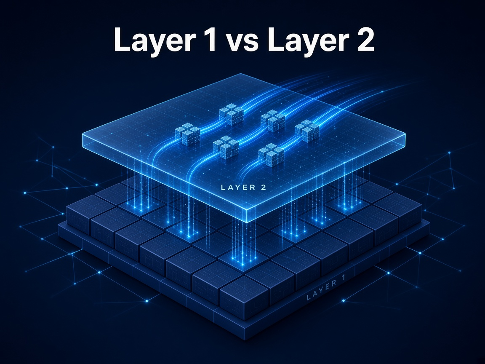

Blockchain
Layer 1 vs Layer 2: What's the Difference?

A Layer 1 (L1) is the main blockchain itself, like Bitcoin, Ethereum or the XRP Ledger. It processes transactions, reaches consensus and keeps the final record. A Layer 2 (L2) is a network built on top of an L1. It handles transactions off the main chain, then settles the results back to it, so the base layer stays secure while more activity fits through.
How the layers work together
- Layer 1 is the foundation. It provides security and final settlement, but its capacity per block is limited, so fees can rise when the network is busy.
- Layer 2 adds speed and lower cost. Rollups such as Arbitrum, Optimism and Base bundle many transactions together and post them to Ethereum as one batch.
- Upgrades help both work together. Ethereum's Dencun upgrade (March 2024) gave rollups a cheaper way to post data, and average fees on networks like Optimism and Base dropped by around 98% right after it went live.
- Not every chain needs an L2. Some Layer 1s, like the XRP Ledger, are designed for fast, low-cost payments at the base layer.
The risks to know
L2s aren't risk-free. Bridges between layers have been a common target for hacks, some networks still rely on a single operator to order transactions, and moving funds between layers can add delays and complexity.
Knowing which layer you're using helps you understand the fees, speed and security you're actually getting.
This article is for general information and education only. It is not financial, investment or legal advice.